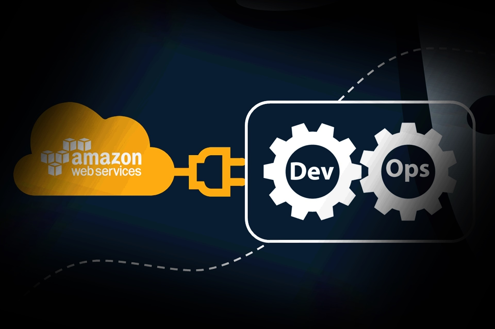

De Fin d'études
DevOps Project : CI/CD Pipeline
STANDARD SHARING SOFTWARE DEVOPS PROJECT
Ce site web est dans le cadre d'un projet de fin d'etudes à 3S(Standard Sharing Software) dans le sujet : Conception et mise en place d'une plateforme CI/CD pour les applications web multi-services.Ce sujet d'ailleurs implique la notion et la methodologie de travail DEVOPS.En effet, on a arrive a developpe une plateforme et une architecture allant du code jusqu'a le dernier deploiement en passant par Git et Jenkins le moteur de notre plateforme, puis le passage par Ansible qui va designer des roles aux instances contenant Docker et les nodes de Kubernetes et kubernetes master, Ainsi, il y a un autre role qu'il push une image vers DockerHub.
CE PROJET PORTE SUR CES AXES :
CONTINUOUS INTEGRATION
CONTINUOUS DEPLOYMENT
NETWORKING, CLOUD COMPUTING (AWS)
JOBS TO EXECUTE
USED TOOLS
PLAYBOOKS, SCRIPTS
DEPLOYMENTS NODES
TOOLS COST ON AWS
My Reputation
BERGAOUI AYOUB. INTERN ENGINEER
Future engineer graduated from supcom.
ACCESS TO OUR SERVERS HERE !
In this section you will find attached all servers of our pipeline project.
As a result, you can access these servers more easily without having to open the AWS platform each time.
*********************************** JUST CLICK ON IMAGES BELLOW AND YOU WILL GET PUSHED ! ***********************************


KUBERNETES

SONARQUBE DASHBOARD

NEXUS DIRECTORY